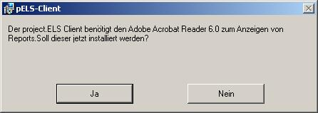
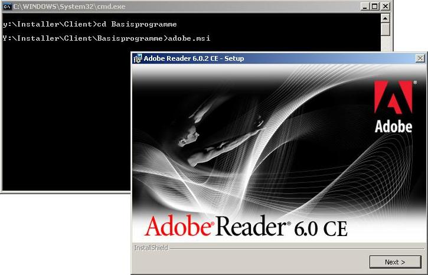
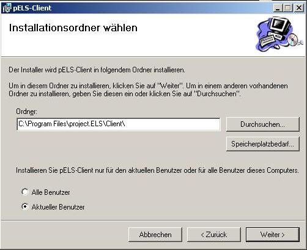

|
|
|
|
Zurück
 Installation des Client Installation des Client
Installationsvoraussetzung
Hardware
- IBM-kompatible Hardware, welche die oben genannte Software in benutzerfreundlicher Geschwindigkeit ablaufen lässt
- Bildschirmauflösung mit mindestens 1024x768 Pixel
- Zur Ausgabe der erstellten Dokumente wird ein Drucker benötigt. Optional ist die Verwendung eines Fax-Modems zur Weitergabe der Dokumente möglich.
Software
- Microsoft Windows 2000 und höher
- Microsoft .NET Framework (auf CD enthalten)
- Adobe Acrobat Reader 6.0 (auf CD enthalten>
Installation Schritt für Schritt
- Legen sie die project.ELS CD in ein beliebiges CD/DVD Laufwerk ein.
- Öffnen sie die project.ELS CD mit dem Windows Explorer
- Wechseln sie in den Ordner Installer
- Wechseln sie in den Unterordner Client
- Starten sie die Datei Setup.exe
- Haben sie den Adobe Reader 6.0 installiert?
Falls nicht, öffnet sich das folgende Dialogfenster.

Drücken sie auf Ja, um den Adobe Reader zu installieren. Falls sie Nein drücken, wird die project.ELS Installation abgebrochen.
- Wenn sie ja gedrückt haben, erscheint der Installationsassistent von Adobe.
Folgen sie den Installationsanweisungen.

- Nachdem der Adobe Reader erfolgreich installiert wurde, startet der project.ELS Installationsassistent automatisch erneut.
- Lesen sie die Hinweise und folgen sie den Installationshinweisen.
- Wählen sie das Verzeichnis, in das der project.ELS Client installiert werden soll.
ACHTUNG: Wählen sie ein Verzeichnis, für das sie uneingeschränkte Schreibrechte besitzen.

- Warten sie bis der project.ELS Client vollständig installiert ist.
- Nach Abschluss der Installation starten sie ihren Rechner neu, damit Änderungen am System übernommen werden können.
Starten des project.ELS Clients
Um den project.ELS Client zu starten, benutzen sie die auf ihrem Desktop erstellte Verknüpfung.
Viel Spaß bei der Verwendung unserer Software.
Problembehandlung
- Problem: Sie haben der Adobe Reader 6.0 installiert, aber der project.ELS Installationsassistent erkennt ihn nicht.
Ursache: Der Installationsassistent überprüft die Registry nach einem gültigen Eintrag. Findet er keinen, so kann die project.ELS Installation nicht fortgesetzt werden.
Lösung: Installieren sie den Adobe Reader 6.0 erneut.
Haben sie ein hier nicht aufgelistetes Problem, mailen sie es uns an els@sigmadelta.de und wir werden schnellst möglich für eine Lösung sorgen.
Zurück
project.ELS version 1.0
|
|